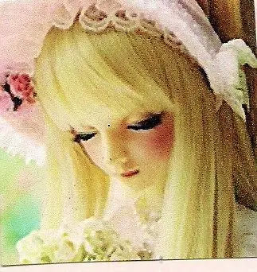

lacedawn
“nothing is more necessary or stronger in us than rebellion”[1]
essentials
my writings
other the archive
about me
dysfunctional girl from a collapsing place. reach me at:
- discord: giwtwm
- email: lacedawn@proton.me
- matrix: @lacedawn:matrix.org
- twitter: lacedawnn

- the unfinished system of nonknowledge by georges bataille